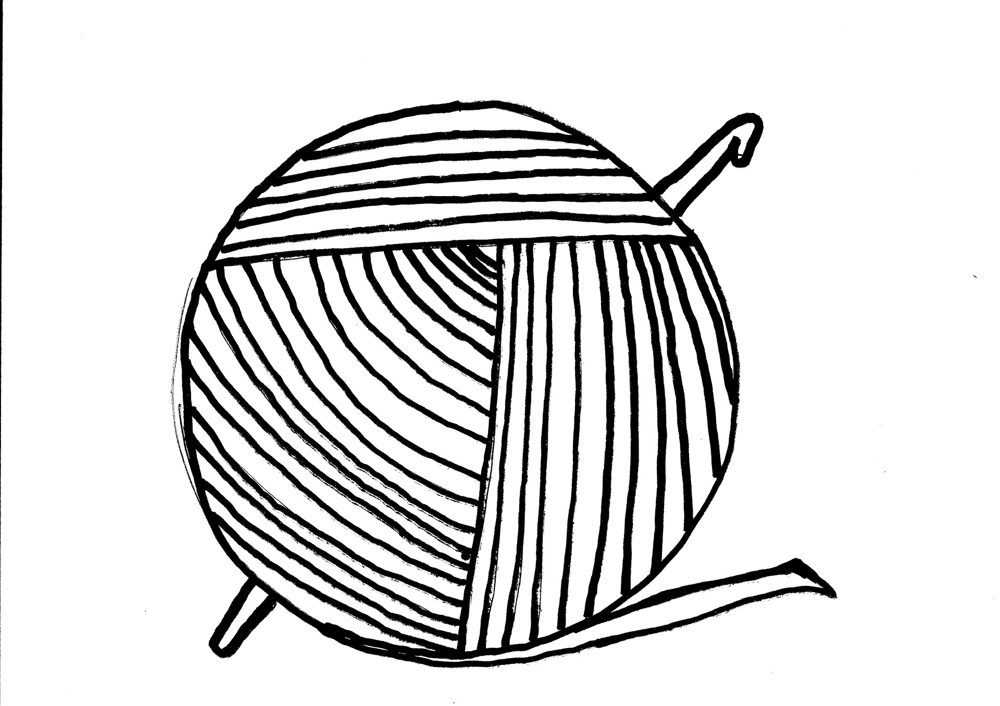

⨳ Как я решила заняться разработкой сайтов? ⨳
Привет, друзья!
Чтобы история была максимально полной и понятной, нужно вернуться в 2016 год, когда на работе нам сообщили, что организацию нашу закрывают, нас сокращают и произойдёт это всё в течение года. Стоит уточнить, что это произошло в рождественские праздники, то есть время - самое начало года. Определённости никакой, внутренняя паника и вопрос "а что будет дальше?". Но даже чаще возникал вопрос "куда бежать?" почему-то.
И главное, что мне было совершенно не понятно - в какую колонку смотреть на сайте поиска работы. Оказалось, что не так уж много я и умею. Тут-то и пришла спасительная мысль о том, что вся эта на первый взгляд неприятная ситуация может превратиться в прекрасную возможность стать КЕМ-ТО.
Об IT сфере я до того момента даже не задумывалась, потому что как и многие считала, что у меня "не тот склад ума". Я - выраженный гуманитарий еще с младших классов школы, с математикой так и не подружилась, никакие технические специальности никогда не рассматривались. При этом я отлично знала, что для того, чтобы начать работать тестировщиком достаточно закончить курсы. Да и зарплата у них на тот момент была выше моей даже на старте.
Стала искать возможности обучаться и на просторах интернета встретился мне один он-лайн ресурс - HTML-Академия - сайт, где учат создавать сайты. Предлагались там и интерактивные курсы (часть совсем бесплатно, остальное при оплате подписки) и более серьёзные он-лайн интенсивы. Начала с бесплатных, чтобы понять пойдёт у меня эта тема или нет, а там уж решать оплачивать ли дальше. Пошло. И это было очень неожиданно, потому что оказалось, что я очень заблужалась относительно склада ума. А главное, мне ужасно понравилось! В общем, оплатила подписку и начала учиться, и даже рассматривала вариант пойти в итоге на интенсив.
Через месяц на работе сообщили, что после долгих и мучительных переговоров нашу организацию решено было не закрывать. Это была прекрасная новость, сразу полегчало, но с учёбой я решила продолжать. Но уже не для того, чтобы перейти в эту профессию, а просто для себя и может быть в будущем для дополнительного заработка.
Но мотивация была уже не та. Теперь от качества и скорости освоения новой инормации не зависело, что мой ребёнок будет кушать завтра, а значит можно было позволить себе слегка расслабиться. Я и расслабилась. И в итоге перестала заниматься совсем.

И 4 года только иногда вспоминала Академию, если где-то на глаза попадался конспект, который я тогда вела.
Если вы читали предыдущий пост, то знаете, что в последнее время меня всё чаще стала посещать мысль о том, что я не развиваюсь. При этом я уже давно заметила, что вся нужная информация всегда приходит ко мне очень в тему. Поэтому когда меня в очередной раз накрыло "остановкой в развитии", а на глаза попалась реклама той самой Академии (знаете, когда посмотришь один сайт, тебе потом везде начинает лезть реклама сайтов с похожим содержанием) я восприняла это как знак. Было это в середине апреля 2020 года.
Оказалось и профиль мой всё ещё активен, и пароль не потерялся, да ещё и все курсы они обновили как раз весной этого же года. А сколько всего нового и интересного там появилось!
И опять начала с того, что было в бесплатном доступе. Я помню, что
в прошлый раз мне очень понравилась манера подачи материала.
Это были всё те же классные курсы, только с более актуальной
информацией,
и я решила попробовать. Дала себе месяц. Обычно, начиная заниматься чем-то новым, мой
энтузиазм через месяц заметно гаснет, если это не моё. Иначе было только с вязанием крючком.
Остальные занятия не прижились, и охладела я к ним примерно через
месяц после начала. Поэтому и тут был определён именно такой срок.
Признаюсь честно, я была почти уверена, что через месяц я брошу эту учёбу, как и все предыдущие занятия (кроме вязания). Каково же было моё удивление, когда, жадно поглощая новые знания, я осознала, что мне этого мало! я хочу ещё! я хочу знать, понимать и уметь в этом деле всё, что только возможно знать понимать и уметь! Это было очень странное ощущение, которое оооочень редко меня посещает. Точнее посетило до этого всего один раз (как вы наверняка уже догадались - с вязанием).
Подробней о том, что предлагает Академия, я расскажу в отдельном посте. А пока... этот блог был создан после 1,5 месяцев обучения. И это не бесплатный конструктор сайтов! Это самый настоящий сайт! Простой, местами примитивный, но мой, вымученный из простой белой страницы и уже почти родной.
Спасибо за время и внимание ♥
До встречи в новых постах!Обнимаю, Ваша Я ♥